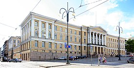
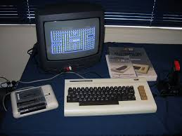
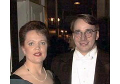

Детство
Линус Торвальдс родился 28 декабря 1969 в Хельсинки в семье финских шведов Нильса и Анны Торвальдс, которые в 1960-х годах были студентами-радикалами, а впоследствии стали журналистами. Линус был назван в честь американского химика Лайнуса Полинга. В школе преуспевал в физике и математике. Был малообщительным, скромным мальчиком. Его часто дразнили из-за политических взглядов его отца.
Образование
In 1988, Linus Torvalds entered the University of Helsinki, where he graduated in 1996 with a master's degree in cybernetics.
Программирование в жизни Линуса
В 1981 году Лео Торнквист — дед Линуса, статистик — познакомил внука с домашним компьютером Commodore VIC-20, использовавшимся им для математических вычислений[6]. Линус заинтересовался программированием и прочитал руководства к машине. Затем он начал читать компьютерные журналы и писать собственные программы, сначала на BASIC, а затем на ассемблере. Со школьных лет Линус Торвальдс получал стипендии за успехи в математике. Первой купленной им ЭВМ была Sinclair QL, стоившая почти 2000 долларов США. После окончания школы Линус поступил в Хельсинкский университет на курс информатики. Обучение было прервано годовой службой в армии. Значимым событием в жизни Торвальдса стало прочтение им книги Эндрю Таненбаума «Операционные системы: разработка и реализация» (Operating Systems: Design and Implementation, ISBN 0-13-638677-6). В книге на примере написанной Таненбаумом ОС Minix представлена структура систем семейства UNIX. Торвальдс очень заинтересовался прочитанным. Позже он купил новый компьютер на базе процессора Intel 80386 и установил Minix. Обнаружив недостатки в системе, он начал писать собственный эмулятор терминала, в котором реализовал переключение задач. Затем Торвальдс добавлял в программу всё новые и новые функции, благодаря чему она вскоре стала обретать черты полноценной операционной системы. Затем он послал объявление в новостную группу «Миникса» с вопросом: «Что бы вы больше всего хотели увидеть в миниксе?» (англ. What would you like to see most in minix?)[9]. 17 сентября 1991 года Линус Торвальдс выложил исходный код программы (версии 0.01) для общедоступной загрузки. Система сразу же вызвала большой интерес. Сотни, потом тысячи программистов стали интересоваться системой (каталог с программой за неимением лучших вариантов назвали «Linux») и работать над её улучшением и дополнением. Система стала распространяться на условиях общественной лицензии GNU — GPL. Автор Minix, профессор Эндрю Таненбаум, неожиданно выступил с резкой критикой дизайна системы: «Я по-прежнему считаю, что создавать монолитное ядро в 1991 году — фундаментальная ошибка. Скажите спасибо, что вы не мой студент: за такой дизайн я бы не поставил высокой оценки :-)» (из письма к Линусу Торвальдсу). Свой пост Таненбаум озаглавил «Linux устарел»[10]. Кроме монолитного ядра, Таненбаум критиковал Linux за отсутствие переносимости. Таненбаум предсказывал, что процессоры семейства x86 в недалёком будущем исчезнут, уступив место архитектуре RISC. Критика сильно задела Торвальдса. Таненбаум был знаменитым профессором, и его мнение имело значение. В данном вопросе, однако, он ошибался. Линус Торвальдс настаивал на своей правоте. Открытость ядра, написанного Линусом, дала возможность использовать его совместно с наработками (компиляторами GCC, базовыми утилитами ОС) GNU, проекта свободного варианта системы UNIX, существовавшего с 1983 года (вся эта система часто называется «Linux», однако правильнее было бы называть её «GNU/Linux»). Популярность системы росла, и позже о ней заговорили журналисты во всём мире. Linux и Торвальдс получили известность. Эмблемой системы стал пингвин Tux. В своей книге «Ради удовольствия» (англ. Just for Fun) Торвальдс пишет, что пингвина в качестве символа предлагала неоднократно его жена, что в итоге «вылилось» в обсуждение в списке рассылки разработчиков ядра[11]. К 2006 году лишь около двух процентов системного ядра Linux было написано самим Торвальдсом, но за ним всегда оставалось решение о внесении изменений в официальную ветку ядра[7]. В 2008 году Линус Торвальдс рассказал, что использует дистрибутив Fedora, потому что в нём была достаточно хорошая поддержка архитектуры PowerPC, с которой он работал на тот момент времени[12]. Его пользование Fedora было подтверждено в дальнейшем в 2012 году, в интервью Linux Format[13]. Торвальдс также публиковал в своём блоге свои мнения об окружениях рабочего стола, чаще всего в ответ на какие-то кардинальные изменения и регрессии в них. Торвальдс владеет товарным знаком «Linux» и следит за его использованием[14] через некоммерческую организацию Linux International и при помощи пользователей Linux во всём мире.
Настоящее
Линус Торвальдс живёт в городе Портленд (США, штат Орегон) с женой Туве (фин. Tove Torvalds, урождённая Tove Monni), шестикратной чемпионкой Финляндии по каратэ и бывшей студенткой Линуса, тремя дочерями: Патрицией Мирандой (род. 5 декабря 1996), Даниэлой Йоландой (род. 16 апреля 1998) и Селестой Амандой (род. 20 ноября 2000). С февраля 1997 по июнь 2003 года работал в компании Transmeta, после чего перешёл в компанию Open Source Development Labs, основанную в 2000 году и вошедшую в 2007 году в The Linux Foundation.
Один из «Законов Линуса», окончательно сформулированный американским хакером Эриком Реймондом, гласит: «При достаточном количестве глаз все ошибки лежат на поверхности». Глубокой ошибкой называется та, которую трудно найти. Однако, если достаточно много людей ищет ошибки, все они выходят на поверхность. Оба программиста разделяют идеологию открытого исходного кода, отчасти основанную на вере в этот закон. Однако их взгляды расходятся в том, что важнее: открытость кода или «свободность» программ, их распространения (сторонником последнего является Реймонд).